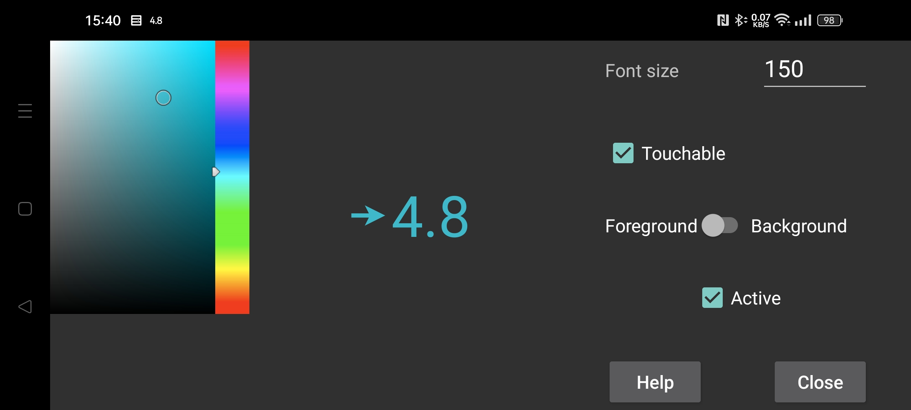

Tutaj możesz ustawić rozmiar czcionki oraz kolor pierwszego planu i tła pływającej wartości stęż. glukozy.
Reakcja na dotyk: po włączeniu tej opcji można przesunąć palcem pływającą wartość glukozy i pomniejszyć ją przez długie naciśnięcie (bez poruszania). Gdy opcja „Reakcja na dotyk” nie jest włączona, dotknięcie przechodzi na widok pod pływającą wartością glukozy, więc możesz używać aplikacji widocznej pod nią. Możesz również uczynić pływającą wartość glukozy niedotykalną, naciskając na nią dwukrotnie.
Przezroczysta: tło niewidoczne.
Powyżej: pływająca glukoza obecna również nad Juggluco.
Czas: znacznik czasu wartości glukozy.
Aktywuj: włącz.
Po wpisaniu rozmiaru czcionki, musisz nacisnąć przycisk "Wprowadź”, "Gotowe” lub "✓" na klawiaturze programowej.
Opcję pływającej glukozy można włączać i wyłączać za pomocą lewego środkowego menu->Pływ. wart.
Możesz przełączyć się na Juggluco, dotykając pływającą wartość glukozy od strony strzałki. Dwukrotne dotknięcie od strony wartości glukozy powoduje, że pływająca wartość glukozy przestaje reagować na dotyk. Długie naciśnięcie wartości glukozy powoduje wyświetlenie tylko małej wartości glukozy, co umożliwia interakcję z tym, co znajduje się pod spodem, a dotknięcie małego podglądu powoduje jego ponowne powiększenie. Przesunięcie podczas dotykania od strony wartości glukozy powoduje przesunięcie pływającej wartości glukozy.
Aby móc wyświetlać treści na wierzchu innych aplikacji, Juggluco potrzebuje specjalnego uprawnienia. Na WearOS, a także Android Auto trzeba użyć adb, aby nadać to uprawnienie, wpisując w wierszu poleceń komendę:
adb shell pm grant tk.glucodata android.permission.SYSTEM_ALERT_WINDOW
W niektórych zegarkach (na przykład TicWatch Pro) można również zezwolić na to za pomocą: Android/WearOS Ustawienia ->Aplikacje i powiadomienia -> Informacje o aplikacjach -> Juggluco -> Zaawansowane -> Wyświetlaj nad aplikacjami.